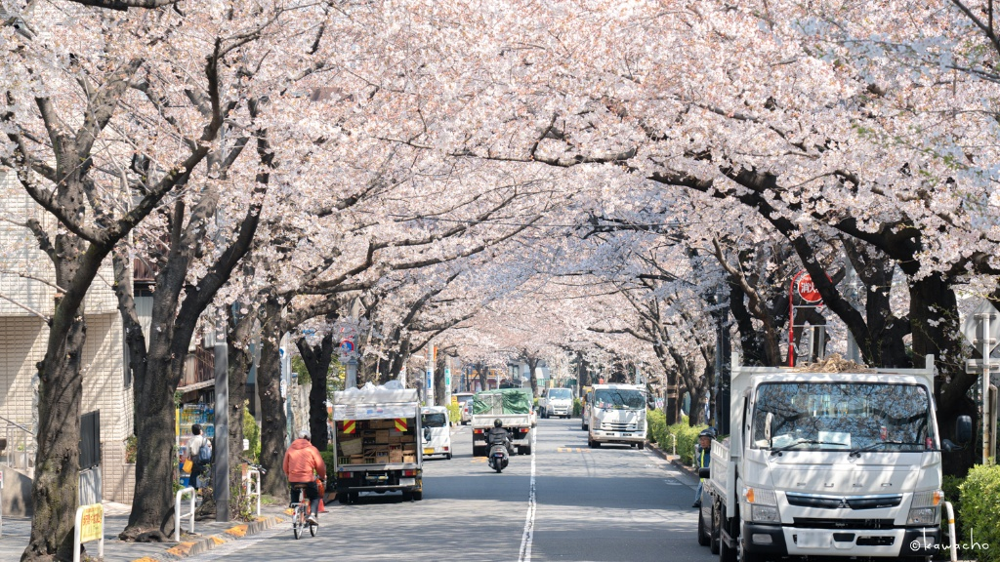

美しく、速く。桜舞う水泳チーム
かむろ坂SCは、攻玉社学園水泳部出身メンバーが集うマスターズチームです。「かむろ坂」の名の通り、桜並木のような華やかさと力強さを兼ね備えた泳ぎを目指しています。
・・・実態は、運動不足のアラサーおじさんたちが年に1度、体を動かすための団体となっています。
チームメンバーの主な大会記録です。大会名をクリックすると詳細（動画・個人の記録）が見られます。
| Date | Event | Details |
|---|---|---|
| 2025.11.29 | 第12回日本マスターズ水泳スプリント選手権大会 EAST | かむろ坂SCより8名出場 |
一緒に泳ぐ仲間を募集しています。お申し込みはこちらから。
お問い合わせフォームへ